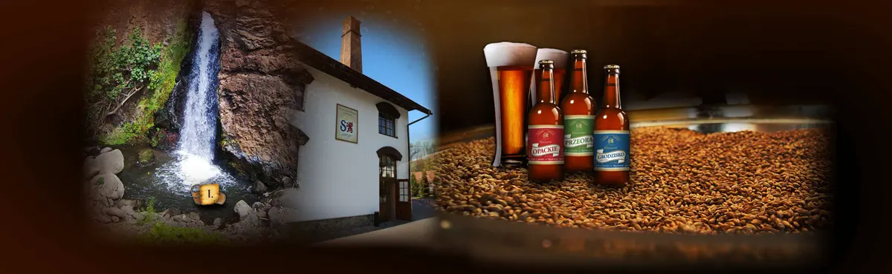

Szczyrzyc 195
Kontakt
Browar, restauracja i Dom Pielgrzyma mieszczą się pod jednym adresem, przy opactwie cystersów.
Noclegi, Dom Pielgrzyma

Co jeszcze na miejscu
Restauracja Regionalna Marysieńka z kuchnią beskidzką oraz Dom Pielgrzyma z noclegami. Oba w kompleksie Centrum Turystycznego Ziemi Szczyrzyckiej.